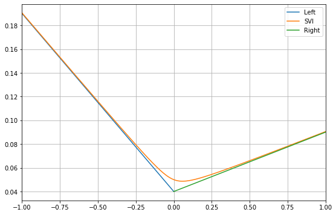
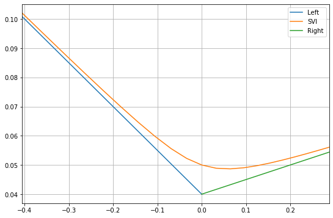

The SVI is simply a function (empirically fit to the data) which given a maturity and a strike price \(K\), computes a BS implied volatility \(\sigma\). Once you have that implied volatility you can plug it into a Black Scholes routine which can compute the BS price and the Black Scholes Greeks. SVI/SVI-JW are used to describe one slice (single tenor) at the time; Surface SVI (SSVI) is used to fit the whole surface (multiple tenors).
The SVI parameterization
Implied variance is always linear in \(k\) as \(|k| \to +\infty\). If we want a parameterization of the implied variance surface, it needs to be linear in the wings and it needs to be curved in the middle as many conventional parameterizations of the volatility surface are quadratic for example.
\[ {\rm var}(k; a,b,\sigma,\rho, m) = a+b(\rho(k-m) + \sqrt{(k-m)^2+\sigma^2}) \]
- \(a\) gives the overall level of variance，\(a\)增加时，波动率曲线整体向上平移。
- \(b\) gives the angle between the left and right asymptotes，\(b\)增加时两翼之间的夹角变小 。
- \(\sigma\) determines how smooth the vertex is, reduces ATM curvature of the smile
- \(\rho\) determines the orientation of the graph，rho负右偏，rho正左偏
- changing \(m\) translates the graph，m增加，右移
- SVI线性模型拟合方差，对iv-slice实质上是亚线性模型。
Slopes and minimum
The left and right asymptotes are respectively \[\begin{equation} \begin{aligned} \sigma_{L}^2(x) &= a - b(1-\rho)(x-m)\\ \sigma_{R}^2 &= a + b(1+\rho)(x-m) \end{aligned} \end{equation}\]

- Variance increases linearly with |k| for k very positive or very negative
- Intuition is that the more out-of-the-money an option is, the more volatility convexity it has.
在实际应用中SVI表达式对极大极小值线性近似几乎没有实际影响，设\(S=3\), \(K=range(2, 4, 0.1)\)则moneyness对应的SVI拟合曲线如下图，并未达到极端值区间。其中left和right为左右渐近线。

Arbitrage-Free Conditions
Vertical Spread Arbitrage-Free
\[ b(1+|\rho|) \leq \frac{4}{T} \]
Calendar Spread Arbitrage-Free
Keeping the moneyness constant, option prices are non-decreasing in time to expiration. Let \(\omega_t = \sigma_{BS}(k,t)^2t\) for fixed \(k\), we must have the total implied variance non-decreasing with respect to time to expiration.
Quasi-Explicit Calibration
Quasi-Explicit Calibration通过两步法循环优化将对5个变量损失函数的优化过程降维到2个变量， 提高了校正的速度和参数稳定性。 使用整体方差\({\rm tv} = \sigma_{\rm implied} ^2 T\) 替换方差\({\rm var}\) \[ {\rm var} \cdot T = (a+b(\rho(k-m) + \sqrt{(k-m)^2+\sigma^2})) \cdot T \] \[ {\rm tv} = a T+b T(\rho(k-m) + \sqrt{(k-m)^2+\sigma^2}) \] 令\(y = \frac{k-m}{\sigma}\) 则原始的SVI模型转换为 \[ {\rm tv} = aT+b\sigma T(\rho y + \sqrt{y^2+1}) \] 令 \[ c = b\sigma T\\ d = \rho b \sigma T\\ \widetilde{a} = aT \] 则 \[ {\rm tv} =\widetilde v(y) =\widetilde{a} + dy+c\sqrt{y^2+1} \] 校准的目标函数从5个参数转换为2个参数\(m\)和\(\sigma\)的损失函数 \[ f_{y,{\rm tv} } (c,d,\widetilde{a}) = \sum((\widetilde a + dy + c\sqrt{y^2+1}) - \widetilde v(y))^2 \] 即最优化 \[ (P_{m,\sigma}) = {\rm min}_{(c,d,\widetilde{a}) \in D} f_{y,{\rm tv} } (c,d,\widetilde{a}) \] 函数\(f_{y,{\rm tv} } (c,d,\widetilde{a})\)是固定参数\(m\)和\(\sigma\)对应\(c,d,a\)的损失函数 \[ f_{y,{\rm tv} } (c,d,\widetilde{a})=\sum^{n}_{i=1} (\widetilde{a} + dy_i + c\sqrt{y^2+1}- v(y))^2 \] 约束域\(D\)为 \[ 0\leq c\leq 4\sigma\\ \] \[ |d|\leq c \ {\rm and} \ |d|\leq 4\sigma - c\\ \] \[ 0\leq \widetilde{a} \leq {\rm max } \{ {\widetilde v_i} \} \] 至此，SVI模型的优化过程变成一个两步优化过程，外层循环使用Nelder-Mead估算\(m\)和\(\sigma\)两个参数，内层使用梯度下降法令梯度算子为0直接获得\(a,b, \rho\)三个参数。对于超出边界的情况使用凸优化域边界值为三个未知变量\(a,d,c\)赋值，计算在边界条件时候的loss函数，选择loss最小的一组\(a,d,c\)值作为\(m,\sigma\)在网格参数扫描对应参数的loss。
优化算法
- step-1 参数\(m,\sigma\)对应的\(c,d,a\)直接解线性方程组，检测函数
acceptable判断是否在域内，如果\(c,d,a\)参数取值在域内直接采用。 对变量为\(a,b, \rho\)的方程组使用GBD算法优化的最小值在梯度\(\nabla f =0\)的位置，即 \[ \frac{1}{2}\nabla f(c,d,\widetilde a) = A \begin{Bmatrix} c \\ d \\a \end{Bmatrix} - b = 0 \]
\[ A= \begin{Bmatrix} n+Y_2 && Y_4 && Y_3 \\ Y_4 && Y_2 && Y_1 \\ Y_3 && Y_1 && n \end{Bmatrix} \]
\[ b =\begin{Bmatrix} vY_2\\ vY \\v \end{Bmatrix} \]
\[\begin{equation} \begin{aligned} Y_1 &= \sum_i y_i\\ Y_2 &= \sum_i y_i^2 \\ Y_3 &= \sum_i \sqrt{y_i^2+1}\\ Y_4 &= \sum_i y_i \sqrt{y_i^2+1}\\ \end{aligned} \end{equation}\]
\[\begin{equation} \begin{aligned} vY_2 &= \sum_i \widetilde v_i \sqrt{y_i^2+1}\\ vY &= \sum_i \widetilde v_i y_i\\ v &= \sum_i \widetilde v_i \\ \end{aligned} \end{equation}\]
程序实现中修改算法为 \[ \begin{Bmatrix} y_5 && y_4 && y_3 \\ y_4 && y_2 && y_1 \\ y_3 && y_1 && w \end{Bmatrix} \begin{Bmatrix} c \\ d \\a \end{Bmatrix} = \begin{Bmatrix} vy_2\\ vY \\v \end{Bmatrix} \]
- 使用mean取代sum消除不同batch-size可能导致的数量级影响
- 使用 vega / vega.max()的winsorize方式对loss-function中不同合约添加权重
1 | vega /= vega.max() # winsorize |
- step-2 如果不在域内，使用边界条件的极值计算。分别假设一个变量取极值、两个变量取极值的loss-function，选择最小的loss对应的\(c,d,a\) 和loss作为\(m,\sigma\)对应的最优化。 例如对\(a = 0\) 约束域修改对比
\[\begin{equation} \begin{aligned} 0 \leq c \leq 4\sigma \\ |d| \leq c \ and \ |d| \leq4\sigma - c \\ 0 \leq \widetilde a \leq max_{i}\{\widetilde v_i \} \\ \end{aligned} \end{equation}\]
\[\begin{equation} \begin{aligned} 0 \leq c \leq 4\sigma \\ |d| \leq c \ and \ |d| \leq4\sigma - c \\ a = 0\\ \end{aligned} \end{equation}\]
\[ \begin{Bmatrix} y_5 && y_4 && y_3 \\ y_4 && y_2 && y_1 \\ y_3 && y_1 && w \end{Bmatrix} \begin{Bmatrix} c \\ d \\a \end{Bmatrix} = \begin{Bmatrix} vy_2\\ vY \\v \end{Bmatrix} \]
\[ \begin{Bmatrix} y_5 && y_4 && y_3 \\ y_4 && y_2 && y_1 \\ 0 && 0 && 1 \end{Bmatrix} \begin{Bmatrix} c \\ d \\a \end{Bmatrix} = \begin{Bmatrix} vy_2\\ vY \\0 \end{Bmatrix} \]
- 注 对\(c,d,a\)取边界条件进行参数扫描的时候 \(c = 0, c=4\sigma\) 隐含约束\(d = 0\) 。
梯度下降法展开
目标函数 \[ f_{y,{\rm tv} } (c,d,\widetilde{a})=\sum^{n}_{i=1} (\widetilde{a} + dy_i + c\sqrt{y_i^2+1}- v(y_i))^2 \] 调整符号和顺序 \[ f (c,d,a)=\sum^{n}_{i=1} (\sqrt{y_i^2+1}\cdot c + y_i\cdot d + \widetilde{a}- \widetilde{v}_i)^2 \]
梯度下降，凸优化损失函数极值在梯度算子为0的位置\(\nabla f =0\) 对参数\(c\)
\[\begin{equation} \begin{aligned} \frac{\partial f}{\partial c} &= \sum 2 \sqrt{y_i^2+1} (\sqrt{y_i^2+1}\cdot c + y_i\cdot d + \widetilde{a}- \widetilde{v}_i) \\ &=\sum 2((y_i^2+1)c + \sqrt{y_i^2+1} y_i d + \sqrt{y_i^2+1}a) - 2\sum \sqrt{y_i^2+1} \cdot \widetilde{v}_i\\ &= 0 \end{aligned} \end{equation}\]
即 \[ \sum(y_i^2+1) \cdot c + \sum\sqrt{y_i^2+1} y_i \cdot d + \sum \sqrt{y_i^2+1} \cdot a - \sum \sqrt{y_i^2+1} \cdot \widetilde{v}_i= 0 \]
对参数\(d\) \[ \frac{\partial f}{\partial d} = \sum 2 y_i (\sqrt{y_i^2+1}\cdot c + y_i\cdot d + \widetilde{a}- \widetilde{v}_i) = 0 \] 即 \[ \sum y_i \sqrt{y_i^2+1} \cdot c + \sum y_i^2 \cdot d +\sum y_i \cdot a - \sum y_i \cdot \widetilde{v}_i = 0 \]
对参数\(a\) \[ \frac{\partial f}{\partial a} = \sum 2 (\sqrt{y^2+1}\cdot c + y_i\cdot d + \widetilde{a}- \widetilde{v}_i) = 0 \] 即 \[ \sum \sqrt{y^2+1}\cdot c + \sum y_i\cdot d + \sum 1 \cdot \widetilde{a}- \sum 1 \cdot \widetilde{v}_i = 0 \]
即求解如下行列式 \[ \begin{Bmatrix} n+Y_2 && Y_4 && Y_3 \\ Y_4 && Y_2 && Y_1 \\ Y_3 && Y_1 && n \end{Bmatrix} \begin{Bmatrix} c \\ d \\ \widetilde{a} \end{Bmatrix} = \begin{Bmatrix} vY_2\\ vY \\v \end{Bmatrix} \]
\[\begin{equation} \begin{aligned} Y_1 &= \sum_i y_i\\ Y_2 &= \sum_i y_i^2 \\ Y_3 &= \sum_i \sqrt{y_i^2+1}\\ Y_4 &= \sum_i y_i \sqrt{y_i^2+1}\\ \end{aligned} \end{equation}\]
\[\begin{equation} \begin{aligned} vY_2 &= \sum_i \widetilde v_i \sqrt{y_i^2+1}\\ vY &= \sum_i \widetilde v_i y_i\\ v &= \sum_i \widetilde v_i \\ \end{aligned} \end{equation}\]
The SVI Jump-Wings (SVI-JW) parameterization
Neither the raw SVI nor the natural SVI parameterizations are intuitive to traders in the sense that a trader cannot be expected to carry around the typical value of these parameters in his head. Moreover, there is no reason to expect these parameters to be particularly stable. The SVI-Jump-Wings (SVI-JW) parameterization of the implied variance v (rather than the implied total variance w) was inspired by a similar parameterization attributed to Tim Klassen, then at Goldman Sachs. For a given time to expiry \(t >0\) and a parameter set \(\xi_J:=\{v_t,\psi_t,p_t,c_t,\tilde{v_t}\}\) the SVI-JW parametrization is given in raw SVI parameters:
\[\begin{equation} \begin{aligned} v_t &= \frac{a+b\left(-\rho m+\sqrt{m^2+\sigma^2}\right)}{t}\\ \psi_t &=\frac{b}{2\sqrt{w_t}}\left(-\frac{m}{\sqrt{m^2+\sigma^2}}+\rho\right)\\ p_t &= \frac{b}{\sqrt{w_t}}(1-\rho)\\ c_t &= \frac{b}{\sqrt{w_t}}(1+\rho)\\ \tilde{v_t} &= \frac{1}{t}\left(a+b\sigma\sqrt{1-\rho^2}\right)\\ \end{aligned} \end{equation}\]
where \(w_t:=v_tt\).
- \(v_t\) gives the ATM variance;
- \(\psi_t\) gives the ATM skew;
- \(p_t\) gives the slope of the left (put) wing;
- \(c_t\) gives the slope of the right (call) wing;
- \(\tilde{v_t}\) is the minimum implied variance.
Reference
- A parsimonious arbitrage-free implied volatility parameterization with application to the valuation of volatility derivatives
- MyExcelLib
- svi-zeliade
- 理解梯度下降法
- 梯度下降（Gradient Descent）小结
- 最小二乘法（least sqaure method）
- Quasi-Explicit Calibration of Gatheral’s SVI model
- Arbitrage-free SVI volatility surfaces
- Arbitrage-free SVI volatility surfaces
- The SVI implied volatility model and its calibration
- SVI-Volatility-Surface-Calibration
Quasi-Explicit Calibration Code
1 | #!/usr/bin/env python |